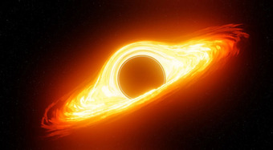

Blog
-
EL AGUJERO NEGRO DE SAGITARIO A
OCTUBRE 30, 2023El agujero negro de Sagitario A es un agujero negro supermasivo que se encuentra en el centro de la Vía Láctea. Tiene una masa de cuatro millones de veces la masa del Sol. Fue descubierto en 1974 y, en 2019, un equipo de astrónomos logró capturar la primera imagen de un agujero negro.
SABER MAS -
UAP
OCTUBRE 29, 2023Los UAP, o Objetos Voladores No Identificados, son objetos que se observan en el cielo y que no se pueden identificar como aviones, helicópteros, globos, drones o cualquier otro objeto conocido. Su naturaleza es un misterio, y algunos creen que podrían ser vehículos extraterrestres.
SABER MAS -
KEPLER-186F
OCTUBRE 27, 2023Kepler-186f es un exoplaneta que orbita la estrella enana roja Kepler-186, a unos 490 años luz de la Tierra. Es el primer exoplaneta del tamaño de la Tierra en la zona habitable de una estrella. Su descubrimiento es un hito importante en la búsqueda de vida extraterrestre.
SABER MAS -

SEÑALES DE RADIO EXTRATERRESTRES
OCTUBRE 25, 2023Las señales de radio extraterrestres son ondas de radio que podrían ser emitidas por civilizaciones extraterrestres. La búsqueda de estas señales es una de las áreas más activas de la astrobiología. A pesar de la búsqueda intensiva de señales de radio extraterrestres, no se ha detectado ninguna señal que pueda atribuirse a una civilización extraterrestre.
SABER MAS -
FÓSILES EXTRATERRESTRES
OCTUBRE 20, 2023Los fósiles extraterrestres son restos o trazas de vida que se originaron en otro planeta o cuerpo celeste. La búsqueda de estos fósiles es una de las áreas más activas de la astrobiología. Hasta la fecha, no se ha encontrado ningún fósil extraterrestre que pueda atribuirse de forma concluyente a la vida.
SABER MAS -
OUMUAMUA
OCTUBRE 19, 2023El Oumuamua es un objeto interestelar que se acercó al Sol en 2017. Tiene una forma alargada y una composición desconocida. Su origen y destino son un misterio.
SABER MAS
-
POSTS DESTACADOS
EL AGUJERO NEGRO DE SAGITARIO A
OCTUBRE 30, 2023 -
POSTS RECIENTES